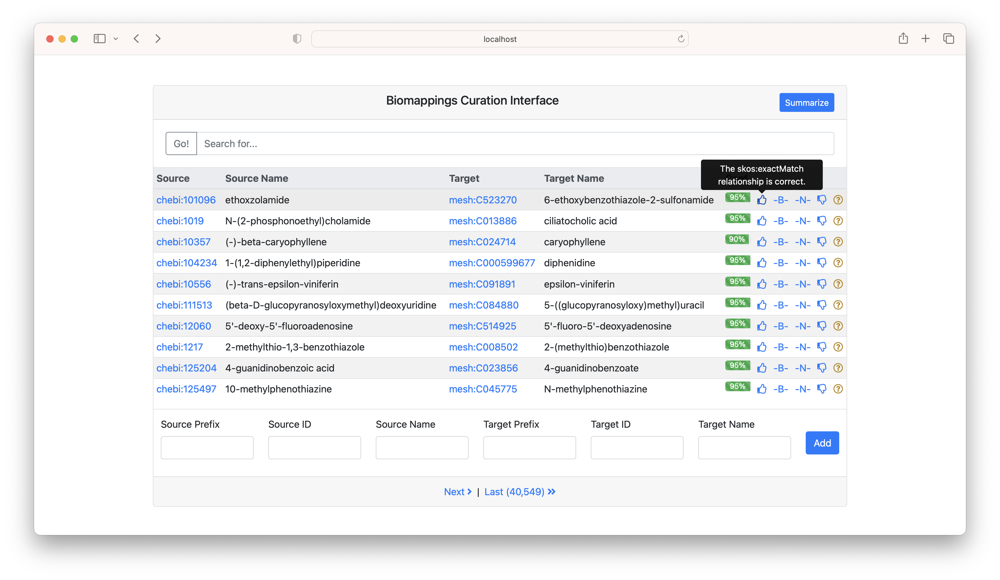
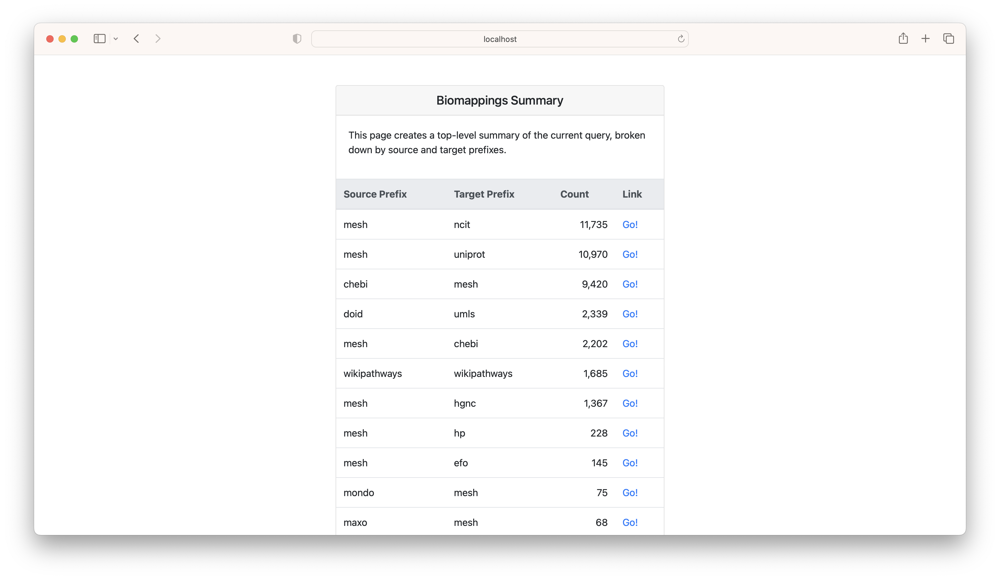
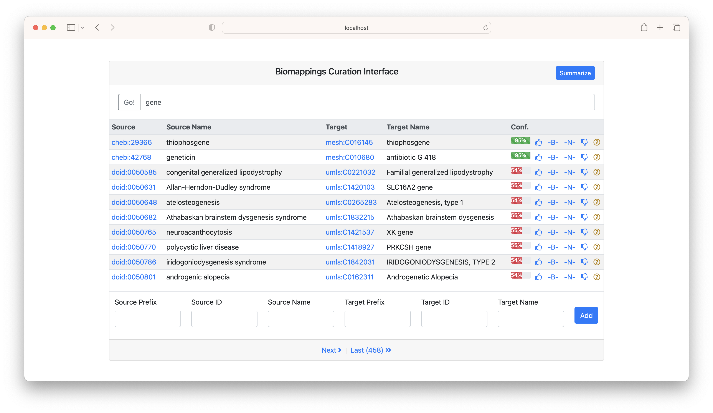
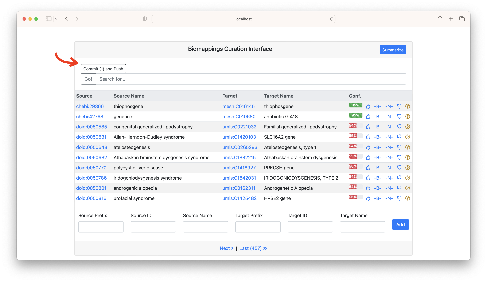

Curating Semantic Mappings with Biomappings¶
There are many partially overlapping ontologies and controlled vocabularies. Many ontologies curate semantic mappings such as database cross-references to support downstream users who might need to merge information, but these are often missing or incomplete.
Curating these mappings by hand is time-consuming, so this tutorial presents a semi-automated semantic mappings curation workflow using Biomappings.

Installing and Running Biomappings¶
- Fork the upstream Biomappings repository
- Clone your fork, make a branch, and install it.
$ git clone git+https://github.com/biopragmatics/biomappings.git
$ cd biomappings
$ git checkout -b your-branch-name
$ pip install -e .[web]
biomappings web
It can be accessed by navigating to http://localhost:5000/ in your browser. After you do some curations, the web application takes care of interacting with the git repository from which you installed biomappings via the "commit and push" button.
Using the Curation Interface¶
Biomappings implements a simple web-based interface. This tutorial covers the most important feature to get you curating. It already has predictions built in - each has provenance on how it was generated and is assigned a numerical confidence (though the meaning varies based on how it was generated).
Navigating and Curating¶
The curation interface shows a set of mappings. There are buttons to curate each as:
- Exact
- Narrow
- Broad
- Incorrect
- Unsure

If you click the "summarize" button, it gives a breakdown of the source/target prefix pairs. This can be helpful for focusing curation.

The search bar can be used to search the CURIE or name for either the subject or target. In the following example, "gene" was searched.

After you do some curations, a "Commit and Push" button will appear. This automates interacting with Git in the background.

Warning You're also free to interact with Git on your own, but make sure that you stay consistent with how you interact with the files. Biomappings keeps track of line numbers, so if they change externally, be sure to restart the curation web application.
When you're done, you can close the web application with control + c.
Contributing Upstream¶
After curating, committing, and pushing, you can make a pull request back to the upstream Biomappings repository. All content in Biomappings is licensed under CC0, meaning that it can be freely reused. Further, several summaries and exports are automatically generated following all pull requests containing curation:
Prominently, this includes the following exports in the Simple Standard for Sharing Ontological Mappings (SSSOM) format:
| Artifact | Description | PURL |
|---|---|---|
| TSV | Mappings (predicted and curated, positive and negative) | https://w3id.org/biopragmatics/biomappings/sssom/biomappings.sssom.tsv |
| Metadata YML | Metadata (extended prefix map, license, etc) for TSV | https://w3id.org/biopragmatics/biomappings/sssom/biomappings.sssom.yml |
| JSON | Mappings in JSON | https://w3id.org/biopragmatics/biomappings/sssom/biomappings.sssom.json |
| OWL | Mappings as an ontology | https://w3id.org/biopragmatics/biomappings/sssom/biomappings.sssom.owl |
These files can be directly pulled by the Ontology Development Kit (ODK) to be incorporated in ontologies. Similarly, Biomappings includes some experimental scripts for contributing them directly into upstream ontology files. For example, to contribute UBERON mappings upstream, do the following:
python -m biomappings.contribute.obo --prefix uberon --path ~/dev/uberon/src/ontology/uberon-edit.obo
Note that this assumes you have UBERON cloned in a certain place. You can edit this to your needs, then ultimately make a commit.
Predicting Mappings¶
The Biomappings workflow is generic and allows for any mapping prediction workflow to be used. In this section, we will predict lexical mappings using Gilda. This approach is fast, simple, and interpretable since it relies on the labels and synonyms for concepts appearing in ontologies and other controlled vocabularies (e.g., MeSH). It takes the following steps:
- Index labels and synonyms from entities in various controlled vocabularies (e.g., MeSH, ChEBI)
- Filter out concepts that have mappings in primary source or third-party mappings in Biomappings
- Perform all-by-all comparison of indexes for each controlled vocabulary
- Filter out mappings that have been previously marked as incorrect (e.g., avoid zombie mappings)
Clone the Repository¶
- Fork the upstream Biomappings repository
- Clone your fork, make a branch, and install it. Note that we're including the
webandgildaextras, so we can run the curation interface locally as well as get all the tools we need for generating predictions.
git clone https://github.com/<your namespace>/biomappings
cd biomappings
git checkout -b tutorial
python -m pip install -e .[web,gilda]
scripts/ directory
cd scripts/
touch generate_chebi_mesh_example.py
Preparing the Mapping Script¶
Biomappings has a lot of first-party support for Gilda prediction workflows, so generating mappings
can be quite easy using a pre-defined workflow. Open your newly created generate_chebi_mesh_example.py
in your favorite editor and add the following four lines:
# generate_chebi_mesh_example.py
from biomappings.gilda_utils import append_gilda_predictions
from biomappings.utils import get_script_url
provenance = get_script_url(__file__)
append_gilda_predictions("chebi", "mesh", provenance=provenance)
All generated mappings in Biomapping should point to the script that generated
them. provenance = get_script_url(__file__) is a sneaky function that uses __file__ to get the name of the
current file and get_script_url() to generate a URI, assuming that this is in the scripts/ directory of the
Biomappings repository.
The hard work is done by append_gilda_predictions("chebi", "mesh", provenance=provenance). Under the hood, this
does the following:
- Looks up the names and synonyms for concepts in ChEBI and MeSH using PyOBO, a unified interface for accessing ontologies and non-ontology controlled vocabularies (such as MeSH)
- Runs the algorithm described above
- Appends the predictions on to the local predictions TSV file
Finishing Up¶
Execute the script from your command line and the predictions will be added to your local Biomappings cache.
python generate_chebi_mesh_example.py
This is a good time to review the changes and make a commit using
git add src/biomappings/resources/predictions.tsv
git commit -m "Add predictions from ChEBI to MeSH"
git push
Finally, you can run the web curation interface like normal and search for your new predictions to curate!
biomappings web
Custom Biomappings¶
If you're a company that wants to use Biomappings internally, it's possible to specify the path to the predictions and curations files used by the web interface. See the options below:
$ biomappings web --help
Usage: biomappings web [OPTIONS]
Run the biomappings web app.
Options:
--predictions-path PATH A predictions TSV file path
--positives-path PATH A positives curation TSV file path
--negatives-path PATH A negatives curation TSV file path
--unsure-path PATH An unsure curation TSV file path
--help Show this message and exit.